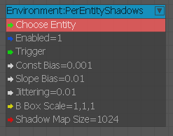
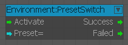
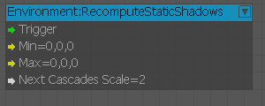
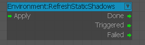
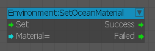
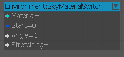
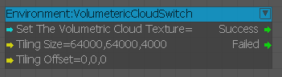
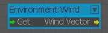

ComputeLighting
Вычислите количество света в данной точке.
MoonDirection
Установите направление луны в 3DEngine.
OceanSwitch
Включите рендеринг океана по требованию.
PreEntityShadows
Используется для включения и указания теней для каждого объекта.

Входы
| Порт | Тип | Описание |
|---|---|---|
| Включено | логическое значение | Активирует узел |
| Триггер | Любой | Запускает параметры |
| ConstBias | Плавать | Уменьшает любые артефакты самозатенения |
| SlopeBias | Плавать | Уменьшает любые артефакты самозатенения |
| Дрожь | Плавать | Размер ядра фильтров, который напрямую влияет на мягкость теней. |
| BBoxScale | Век3 | Масштабный коэффициент для ограничивающей рамки выбранного объекта. Может быть полезно, если ограничивающая рамка слишком мала или слишком велика. |
| ShadowMapSize | Целое число | Размер пользовательской карты теней, которая автоматически округляется до следующей степени двойки. |
PresetSwitch
Используется для переключения предустановок среды.

RecomputeStaticShadows
Кэшированные каскады теней по умолчанию центрируются вокруг камеры рендеринга и автоматически центрируются и обновляются, как только камера приближается к границе каскада. Используйте этот узел для override этого автоматического размещения.

Ввод
| Порт | Тип | Описание |
|---|---|---|
| Триггер | Любой | Активирует узел |
| Мин | Век3 | Минимальное положение ограничительной рамки |
| Макс | Век3 | Максимальное положение ограничительной рамки |
| NextCascadesScale | Плавать | Входное значение множителя |
RefreshStaticShadows
Используется как помощник статических теней.

SetOceanMaterial
Используется для установки материала океана.

Входы
| Порт | Тип | Описание |
|---|---|---|
| Установить | Любой | Включите материал для океана |
| Материал | Строка | Материал для океана |
Выходы
| Порт | Тип | Описание |
|---|---|---|
| Успех | Любой | Срабатывает при установке материала |
| Не удалось | Любой | Срабатывает, если произошла ошибка |
SkyMaterialSwitch
Используется для включения переключения материала неба.

Входы
| Порт | Тип | Описание |
|---|---|---|
| Материал | Строка | Материал для неба |
| Старт | логическое значение | Запуск переключения материала |
| Угол | Плавать | Начальный угол |
| Растяжка | Плавать | Делается ли растяжка или нет |
SkyboxSwitch
Нода для асинхронного переключения скайбокса.
Солнце
Установите данные Sun для 3DEngine.
VolumetricCloudSwtich
Используется для установки объемной текстуры облака.

Ветер
Используется для получения и вывода вектора направления ветра.

Входы
| Порт | Тип | Описание |
|---|---|---|
| Получить | Любой | Получить текущий вектор ветра окружающей среды |
Выходы
| Порт | Тип | Описание |
|---|---|---|
| WindVector | Век3 | Выводит текущий вектор ветра окружающей среды |
Устаревшие узлы
MaterialParam
MaterialParamSerialize